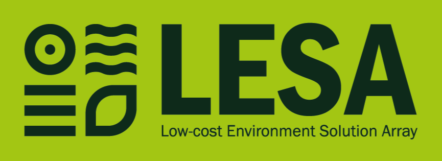
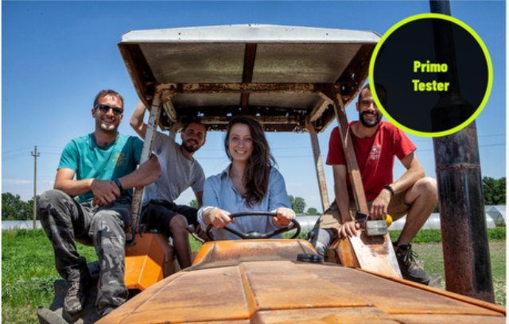
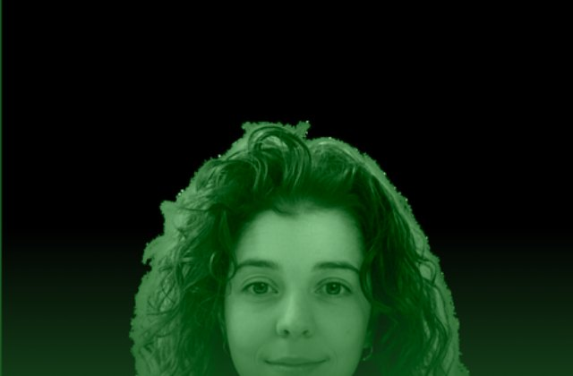

70%
dell'acqua potabile
usata in agricoltura in Italia
LESA · Low-cost Soil Sensor Array
Bologna · quaderno di campo, 2026
LESA la ascolta. L'acqua giusta, al momento giusto.
LESA è un sistema di sensori a basso costo che misura l'umidità del suolo dove vivono le radici, legge la pressione atmosferica e prevede la pioggia. Il risultato è una sola, semplice notifica: irriga ora, oppure aspetta. Niente Wi-Fi, niente abbonamenti, si alimenta col sole.

Lo dicono i 25 agricoltori che abbiamo intervistato. Lo conferma Tommaso di Cascina Fraschina. I dati satellitari sono troppo imprecisi per i campi piccoli; i sensori professionali costano più di 500 € l'uno, un investimento insostenibile per una PMI agricola. E basta una stagione storta per far saltare i conti.
70%
dell'acqua potabile
usata in agricoltura in Italia
500 €+
costo minimo
per un sensore professionale esistente
40%
acqua sprecata
ogni singola stagione irrigua
Non è una questione di volontà. È una questione di accessibilità.
LESA misura la ground-truth: l'umidità reale a diverse profondità, esattamente dove vivono le radici. Il nostro hub integra un algoritmo che legge la pressione atmosferica ogni 5 secondi e costruisce una previsione barometrica iper-locale. Il risultato è una singola, semplice notifica.
Misura l'umidità del suolo dove vivono le radici, non in superficie. Ground-truth reale, non una stima dal satellite.
Comunicazione fino a 4 km in campo aperto. Nessun Wi-Fi, nessun abbonamento internet.
Algoritmo locale con previsione barometrica iper-locale. Decisioni autonome, in tempo reale, anche senza connessione.
architettura dual-intelligence, in numeri
| Valore | Che cosa | Nota |
|---|---|---|
| 4 km | portata LoRaWAN in campo aperto | senza Wi-Fi |
| < 50 € | costo per unità a scala produttiva | contro i 500 € di oggi |
| 10× | più economico dei competitor | |
| 7 gg | autonomia senza sole (batteria) | il sole la alimenta |
| 40% | riduzione potenziale dello spreco idrico | da validare sul campo |
Tommaso e i suoi 4 colleghi coltivano 10 ettari di terra biologica a Milano. Per decidere quando irrigare, si affidano ancora al proprio istinto. Non per mancanza di volontà, ma perché nessuno ha ancora creato uno strumento alla loro portata.

3,96 Mld €
oggi
mercato dell'agricoltura digitale
9 Mld €
proiezione 1–5 anni
un mercato che raddoppia, e l'Europa che spinge nella nostra direzione
Da 4 miliardi oggi a 9 miliardi domani. Il settore agritech cresce a velocità sostenuta.
La Water Framework Directive impone standard per la riduzione dello spreco idrico. Le PMI devono adeguarsi.
Credito d'imposta 4.0, Sabatini Green, bandi.
I nuovi agricoltori cercano soluzioni digitali.
fonti: Istat, Mordor Intelligence, MarketsandMarkets
18 mesi per mettere radici
| Quando | Fase | Che cosa |
|---|---|---|
| 2025 – 02/2026 | Validazione |
|
| 03 – 04/2026 | Struttura |
|
| Q3 2027 | Mercato Italia |
|
| 2030 | Espansione |
|

Angela Ferrante
Co-founder & CEO
Chef, F&B manager, manager d'hotel, studentessa di Management & Marketing. Oggi porta LESA sul mercato.
Sayed El Moutaouakel Berghout
Co-founder & CTO
Studente di Fisica Applicata, assistente ricercatore in oncologia e radioterapia. Oggi costruisce l'intelligenza di LESA.
con noi: Andrea Simone, agronomo consulente · Martina Guerrini, product & graphics designer
Due realtà nate dall'incontro tra tecnologia e natura. Piantami crea superfici bio-attive brevettate contenenti semi vivi. Packaging, etichette, shopper: dopo l'utilizzo, si piantano. Non generano rifiuti, generano vita.
«Cambiamo il destino del packaging, affinché dopo aver servito un prodotto possa servire anche il pianeta.»Piantami® — Paper back to Plant
Il packaging di Piantami finisce nel suolo e germoglia. Ma una pianta ha bisogno di acqua, nella giusta quantità, al momento giusto. È qui che entra LESA.
Piantami democratizza la sostenibilità per i brand. LESA la porta agli agricoltori. Entrambi credono che la natura non debba essere un lusso riservato a pochi.
Piantami chiude il ciclo del packaging. LESA chiude il ciclo dell'acqua. Insieme costruiamo un'agricoltura in cui niente viene sprecato: né la carta, né l'acqua.
«Non è una coincidenza che ci siamo trovati. Lavoriamo entrambi per lo stesso futuro, partendo da angolazioni diverse.» — Angela Ferrante
Sei un agricoltore, un investitore, o semplicemente curioso? Scegli un giorno e lasciaci i tuoi contatti: ti richiamiamo noi.